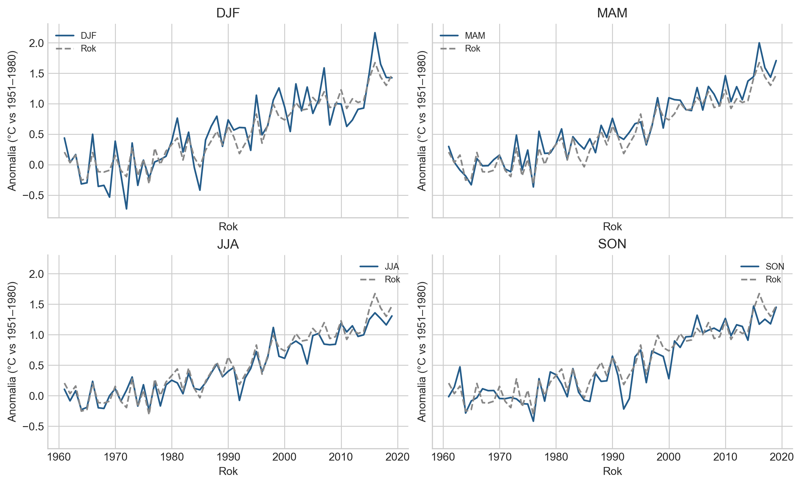

Miesiące, sezony i granice porównania częstotliwości FAOSTAT
Opublikowano
23 września 2026
Od średniej rocznej do części roku
Średnia roczna pokazuje wyraźny wzrost anomalii temperatury nad lądami. Nie mówi jednak, czy zmiany zachodzą podobnie przez cały rok.
W tej części schodzimy więc poziom niżej: od jednego szeregu rocznego do miesięcy i sezonów. Sprawdzamy dwa pytania:
czy wszystkie części roku ocieplały się w podobnym tempie,
czy ich zmienność zmieniała się w czasie.
To analiza eksploracyjna. Jej celem jest zrozumienie struktury danych przed porównaniem modeli prognostycznych, a nie wskazanie najlepszego modelu.
Kod
from pathlib import Pathimport syssys.path.insert(0,str(Path.cwd().parent))from frequency_exploration import analyzefrom temperature.series import LABELSimport numpy as npimport matplotlib.pyplot as pltfrom IPython.display import display,Markdownr=analyze()plt.style.use('seaborn-v0_8-whitegrid')plt.rcParams.update({'figure.dpi':130,'axes.spines.top':False,'axes.spines.right':False})def table(frame): display(frame.style.format(precision=3).hide(axis='index'))annual=r['trends'].set_index('code').loc[7020,'trend_decade']monthly=r['trends'].query('code <= 7012')lo=monthly.loc[monthly.trend_decade.idxmin()]; hi=monthly.loc[monthly.trend_decade.idxmax()]display(Markdown(f'**W historii 1961–2019 trendy miesięczne wynoszą od {lo.trend_decade:.3f}°C/dekadę ({lo.period}) do {hi.trend_decade:.3f}°C/dekadę ({hi.period}).** Trend roczny wynosi {annual:.3f}°C/dekadę. Są to oszacowania opisowe, bez testu istotności różnic.'))
W historii 1961–2019 trendy miesięczne wynoszą od 0.242°C/dekadę (Lip) do 0.333°C/dekadę (Mar). Trend roczny wynosi 0.275°C/dekadę. Są to oszacowania opisowe, bez testu istotności różnic.
Co dokładnie porównujemy?
Analizujemy globalne dane FAOSTAT World / Temperature change dla lat 1961–2019. Porównujemy 12 miesięcy, cztery sezony oraz rok meteorologiczny.
Wartości są anomaliami temperatury, czyli odchyleniami od średniej z okresu referencyjnego 1951–1980. Dlatego np. anomalii stycznia i lipca nie należy interpretować jako bezpośredniego porównania temperatur tych miesięcy. Każdy miesiąc jest porównywany z własną historyczną normą.
Sezony meteorologiczne powstają przez połączenie kolejnych miesięcy w cztery trzymiesięczne okresy. Ich skróty pochodzą od angielskich nazw miesięcy:
DJF — December, January, February, czyli grudzień–styczeń–luty,
MAM — March, April, May, czyli marzec–kwiecień–maj,
JJA — June, July, August, czyli czerwiec–lipiec–sierpień,
SON — September, October, November, czyli wrzesień–październik–listopad.
W analizie globalnej lepiej posługiwać się tymi skrótami niż nazwami „zima”, „wiosna”, „lato” i „jesień”. DJF odpowiada zimie na półkuli północnej, ale jednocześnie latu na półkuli południowej. Podobnie JJA oznacza lato na północy i zimę na południu. Skróty DJF, MAM, JJA i SON opisują więc konkretne miesiące, a nie porę roku wspólną dla całego świata.
Szczególnym przypadkiem jest DJF, ponieważ obejmuje dwa lata kalendarzowe. W tym projekcie sezon przypisujemy do roku stycznia i lutego. DJF 2019 oznacza więc grudzień 2018 oraz styczeń i luty 2019. Ta konwencja będzie później ważna przy ustalaniu granicy między danymi treningowymi a prognozowanymi.
Nowsze wydanie FAOSTAT, obejmujące lata 1961–2025, wykorzystujemy tylko pomocniczo - do sprawdzenia agregacji i ewentualnych rewizji danych.
Rysunek 1: World, historyczne FAOSTAT 1961–2019. OLS w każdej części roku; linia przerywana oznacza trend roczny. Bez przedziałów ufności — porównanie opisowe.
Pierwsze porównanie dotyczy trendu temperatury. Dla każdego miesiąca i sezonu osobno dopasowujemy trend liniowy i wyrażamy jego nachylenie w °C na dekadę.
Wysokość słupka na wykresie oznacza więc tempo zmiany temperatury, a nie jej poziom.
Najważniejsza obserwacja jest prosta: wszystkie miesiące wykazują wzrost, ale jego tempo nie jest jednakowe. Roczna średnia ukrywa zatem część struktury widocznej dopiero po rozbiciu roku na krótsze okresy.
Różnic tych nie należy jednak traktować jako formalnego dowodu, że jeden miesiąc ociepla się statystycznie istotnie szybciej od drugiego. Miesiące należą do tego samego szeregu klimatycznego i nie są niezależnymi próbami. Na tym etapie porównujemy jedynie oszacowania trendów.
Jak wygląda to w przebiegu sezonów?
Rozbicie szeregu na cztery sezony pozwala zobaczyć tę samą historię z innej perspektywy.
W każdym sezonie długookresowy kierunek zmian jest podobny — anomalie rosną — ale poszczególne szeregi różnią się zarówno tempem wzrostu, jak i krótkookresowymi wahaniami.
Średnia roczna dobrze pokazuje wspólny kierunek zmian, ale wygładza różnice występujące wewnątrz roku.
Kod
fig,axes=plt.subplots(2,2,figsize=(10,6),sharex=True,sharey=True,layout='constrained')for ax,code inzip(axes.flat,range(7016,7020)): ax.plot(r['old'].index,r['old'][code],label=LABELS[code],color='#245c8a') ax.plot(r['old'].index,r['old'][7020],label='Rok',color='#888',linestyle='--') ax.set(title=LABELS[code],xlabel='Rok',ylabel='Anomalia (°C vs 1951–1980)') ax.legend(fontsize=8)plt.show()

Rysunek 2: Przebiegi czterech sezonów z tego samego historycznego wydania FAOSTAT. Wspólne osie ułatwiają porównanie.
Czy wraz z ociepleniem rośnie również zmienność?
Rosnący poziom temperatury nie musi oznaczać, że temperatury stają się bardziej zmienne. Aby rozdzielić te dwa zjawiska, najpierw usuwamy lokalny trend liniowy, a dopiero potem mierzymy rozrzut pozostałych odchyleń.
Porównujemy trzy równie długie okresy:
1961–1979,
1981–1999,
2001–2019.
Dla każdego miesiąca i sezonu pytamy więc nie „jak bardzo wzrosła temperatura?”, lecz:
jak silnie wartości wahały się wokół swojego lokalnego trendu?
Wyniki nie pokazują jednego wspólnego wzorca. Dla części miesięcy zmienność w ostatnim okresie jest większa niż w pierwszym, dla innych — mniejsza.
Oznacza to, że wzrost temperatury i zmiana jej zmienności są dwoma różnymi zjawiskami. Sam wzrost średniej anomalii nie wystarcza, aby stwierdzić, że wszystkie części roku stały się bardziej zmienne.
Trzeba też pamiętać, że analizujemy zmienność rocznych anomalii poszczególnych miesięcy i sezonów. Nie jest to miara częstości fal upałów, mrozów ani innych ekstremalnych zjawisk pogodowych.
Rysunek 3: Zmienność reszt po lokalnym trendzie liniowym, °C; World. Każdy punkt odpowiada 19 obserwacjom tej samej części roku.
Kod
v=r['variability'].query('code <= 7012').pivot(index='period',columns='window',values='residual_sd')count=int((v['2001–2019']>v['1961–1979']).sum())display(Markdown(f'W ostatnim oknie zmienność reszt jest wyższa niż w pierwszym dla **{count} z 12 miesięcy**. To opis wybranych okien, nie dowód trwałej zmiany wariancji.'))
W ostatnim oknie zmienność reszt jest wyższa niż w pierwszym dla 3 z 12 miesięcy. To opis wybranych okien, nie dowód trwałej zmiany wariancji.
Czy miesiące odtwarzają sezon i rok?
Dane miesięczne są bardziej szczegółowe, ale pojawia się praktyczne pytanie: czy można z nich dokładnie odtworzyć agregaty publikowane przez FAOSTAT?
Sprawdzamy kilka prostych reguł:
średnią z jednakowymi wagami miesięcy,
średnią ważoną liczbą dni,
średnią z czterech sezonów.
Dla DJF grudzień należy do poprzedniego roku kalendarzowego. Przykładowo DJF 2019 wykorzystuje grudzień 2018 oraz styczeń i luty 2019.
Porównanie pokazuje, że proste rekonstrukcje są zbliżone do wartości źródłowych, ale nie są ich dokładnym odpowiednikiem. Nie powinniśmy więc zakładać, że FAOSTAT tworzy swoje agregaty dokładnie według jednej z testowanych przez nas reguł.
Największe rozbieżności warto traktować jako sygnał do sprawdzenia metodologii źródła, a nie automatycznie jako błąd lub efekt zaokrąglenia.
Różnice liczymy jako rekonstrukcja minus wartość źródłowa. Brak grudnia 1960 wyklucza rekonstrukcję pełnego pierwszego DJF i roku meteorologicznego. Dla miesięcy wspólne pełne lata meteorologiczne zaczynają się zatem w 1962 r.
Kod
g=r['audit'].query("vintage == 'historical' and target == 'DJF' and rule == 'equal_months'")worst=g.loc[g.error.abs().idxmax()]display(Markdown(f'Największa różnica prostej rekonstrukcji DJF w starym pliku przypada na **{int(worst.year)} r.**: rekonstrukcja **{worst.reconstructed:.3f}°C**, źródło **{worst.source:.3f}°C**, różnica **{worst.error:.3f}°C**. Nie zakładamy, że jest to wyłącznie zaokrąglenie. Przyczyna wymaga potwierdzenia metody agregacji FAOSTAT.'))
Największa różnica prostej rekonstrukcji DJF w starym pliku przypada na 1992 r.: rekonstrukcja 0.635°C, źródło 0.611°C, różnica 0.024°C. Nie zakładamy, że jest to wyłącznie zaokrąglenie. Przyczyna wymaga potwierdzenia metody agregacji FAOSTAT.
Ważna konsekwencja: gdzie kończy się trening?
Ta różnica kalendarzowa ma bezpośrednie znaczenie dla eksperymentu prognostycznego.
Rok meteorologiczny kończy się w listopadzie. Jeżeli model ma korzystać wyłącznie z informacji dostępnych do końca roku meteorologicznego 2019, jego miesięczny zbiór treningowy również musi kończyć się w listopadzie 2019.
Grudzień 2019 należy już do roku meteorologicznego 2020 i musi znaleźć się po stronie prognozowanej.
To drobny szczegół kalendarza, ale ważny dla uczciwego eksperymentu: wykorzystanie grudnia w treningu oznaczałoby przekazanie modelowi informacji z okresu, który ma dopiero przewidywać.
Wnioski: wspólny wzrost, różne tempo i zmienność
Analiza miesięcy i sezonów pokazuje bardziej złożony obraz niż pojedynczy szereg roczny. Wspólnym elementem jest wzrost anomalii temperatury, ale jego tempo oraz zmienność różnią się między częściami roku.
Kod
t=r['trends'].set_index('code').trend_decadesd=r['variability'].pivot(index='code',columns='window',values='residual_sd')display(Markdown(f'''**Nie każda część roku ocieplała się w tym samym tempie.** Wszystkie 12 miesięcy i cztery sezony mają dodatnie oszacowania trendu w latach 1961–2019. Trend marcowy wynosi {t[7003]:.3f}°C/dekadę, a lipcowy {t[7007]:.3f}°C/dekadę — różnica między nimi to **{t[7003]-t[7007]:.3f}°C/dekadę**. Jest to różnica oszacowań, a nie wynik testu ich statystycznej istotności.**Średnia roczna ukrywa część różnic wewnątrz roku.** Wśród sezonów największe tempo wzrostu ma MAM ({t[7017]:.3f}°C/dekadę), a najmniejsze JJA ({t[7018]:.3f}°C/dekadę). Trend roczny ({t[7020]:.3f}°C/dekadę) znajduje się pomiędzy nimi. Wynik dotyczy globalnego agregatu temperatury nad lądami i nie oznacza, że taki sam wzorzec występuje w każdym regionie.**Ocieplenie nie oznacza automatycznie większej zmienności.** Między okresami 1961–1979 i 2001–2019 odchylenie reszt rocznych spada z {sd.loc[7020,'1961–1979']:.3f} do {sd.loc[7020,'2001–2019']:.3f}°C. Dla DJF rośnie z {sd.loc[7016,'1961–1979']:.3f} do {sd.loc[7016,'2001–2019']:.3f}°C, natomiast dla JJA spada z {sd.loc[7018,'1961–1979']:.3f} do {sd.loc[7018,'2001–2019']:.3f}°C. Nie obserwujemy więc jednego kierunku zmian zmienności dla wszystkich części roku. Jest to analiza reszt po usunięciu lokalnego trendu, a nie analiza ekstremalnych zjawisk pogodowych.'''))
Nie każda część roku ocieplała się w tym samym tempie. Wszystkie 12 miesięcy i cztery sezony mają dodatnie oszacowania trendu w latach 1961–2019. Trend marcowy wynosi 0.333°C/dekadę, a lipcowy 0.242°C/dekadę — różnica między nimi to 0.091°C/dekadę. Jest to różnica oszacowań, a nie wynik testu ich statystycznej istotności.
Średnia roczna ukrywa część różnic wewnątrz roku. Wśród sezonów największe tempo wzrostu ma MAM (0.296°C/dekadę), a najmniejsze JJA (0.251°C/dekadę). Trend roczny (0.275°C/dekadę) znajduje się pomiędzy nimi. Wynik dotyczy globalnego agregatu temperatury nad lądami i nie oznacza, że taki sam wzorzec występuje w każdym regionie.
Ocieplenie nie oznacza automatycznie większej zmienności. Między okresami 1961–1979 i 2001–2019 odchylenie reszt rocznych spada z 0.198 do 0.157°C. Dla DJF rośnie z 0.355 do 0.382°C, natomiast dla JJA spada z 0.186 do 0.135°C. Nie obserwujemy więc jednego kierunku zmian zmienności dla wszystkich części roku. Jest to analiza reszt po usunięciu lokalnego trendu, a nie analiza ekstremalnych zjawisk pogodowych.
Co z tego wynika dla dalszej analizy?
Dane miesięczne i sezonowe ujawniają strukturę, której nie widać w pojedynczej średniej rocznej. Większa szczegółowość ma jednak swoją cenę: kolejne obserwacje są ze sobą powiązane, dlatego więcej punktów w szeregu nie oznacza automatycznie więcej niezależnej informacji ani lepszych prognoz.
Znaczenie ma również sposób agregacji. Proste średnie z miesięcy nie odtwarzają dokładnie agregatów publikowanych przez FAOSTAT. W dalszych eksperymentach porównujemy więc modele na wspólnie skonstruowanym celu, zamiast traktować różne definicje szeregu jako równoważne.
Dla badanych modeli i horyzontów przejście z danych rocznych do gęstszych szeregów nie obniżyło łącznego historycznego MAE względem najlepszego benchmarku rocznego.
Nie oznacza to, że dane miesięczne są zbędne. Okazały się wartościowe opisowo: pozwoliły zobaczyć, kiedy wzrost temperatury był szybszy, jak różniły się sezony oraz jak zmieniała się zmienność. Nie przełożyło się to jednak automatycznie na przewagę prognostyczną.
Większa szczegółowość pomogła lepiej zrozumieć proces, ale w badanych eksperymentach nie dała automatycznie lepszej prognozy.
Eksport: python stories/globalne_ocieplenie/frequency_exploration.py. Notebook oblicza wyniki ponownie przez ten sam moduł. Nie pobiera danych podczas renderowania.